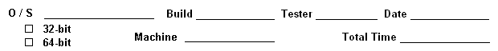

Running File Action Manager as a Service

The following test requires two machines. In the directions below, the machine which runs File
Action Manager as a service is referred to as the "service machine." The machine that contains
the database is referred to as the "database machine."
- Setting up the Database Machine
- Make sure the database machine has SQL Server 2005 or SQL Server
2008 installed.
- Use the SQL Server Management Studio Express application to create a new
database named ServiceTest or clear the existing database if it
already exists.
- Add an action called "ComputeRedactions" to the database.
- SQL Server 2005
- Configuring the Database
- Under the start menu go to All Programs -> Microsoft
SQL Server 2005 -> Configuration Tools -> SQL Server
Surface Area Configuration
- Click on Surface Area Configuration for Services and
Connections.
- Select MSSQLSERVER and then select Database Engine.
- Click on Remote Connections and then select the Local
and remote connections radio button.
- Under Local and remote connections choose the Using
both TCP/IP and named pipes radio button.
- Click the Apply button.
- Click on Service which is located in the list to the left
above Remote Connections.
- Change the Startup type: to Automatic and then click
the Apply button.
- Click the Okay button.
- Right click on My Computer and select Manage.
- Select System Tools from the list on the left and then
click on Local Users and Groups.
- Click on Groups and then double click on SQLServer2005MSSQLUser$<Local Machine Name>$MSSQLSERVER
in the list on the right.
- Click the Add button.
- Click on the Locations buttons, and then click
Entire Directory from the list that appears.
- Select extract.local and then click the OK
button.
- Search for your user name by entering the first few letters
of your user name into the Enter the object name to select
edit box and clicking the Check Names button.
- After your user name appears in the Enter the object name
to select edit box click the OK button.
- Click the Apply button and then the OK button.
- Repeat the above steps for all the groups that start with
SQLServer2005.
- Setting up the Firewall
- Go to the Windows Control Panel and double click on the Windows
Firewall icon.
- Select the Exceptions tab, and then click the
Add Program... button.
- Click the Browse... button, and browse to
C:\Program Files\Microsoft SQL Server\90\Shared.
- Select sqlbrowser.exe and click the Open button.
- Click the OK button to add the program to the exceptions
list.
- Repeat the above steps to add sqlservr.exe to the
exceptions list. (It is located under C:\Program Files\Microsoft
SQL Server\MSSQL.1\MSSQL\Binn.)
- Restarting the SQLServer\Browser Services
- Under the start menu go to All Programs -> Microsoft SQL Server
2005 -> Configuration Tools -> SQL Server Surface Area
Configuration
- Click on Surface Area Configuration for Services and
Connections.
- Select MSSQLSERVER and then select Database Engine.
- Select Service and then restart the service by clicking on
the Stop button, and then clicking on the Start button.
- On the menu to the left, select SQL Server Browser and then
select Service.
- Restart the service by clicking on the Stop button, and then
clicking on the Start button.
- Set the Startup Type Automatic.
- Open up the USB License Key Manager Utility and make sure that
the License Server is pointed to a valid machine. (Usually LISA.)
- Run Windows Update to check for any service packs or updates.
- Setting up the Service Machine
- Make sure that the machine that is running the service is fully licensed. If it
is not, use the COM License Generator utility to create a full license for
the service machine.
- Installing the Service
- Install the Windows Server 2003 Resource Kit. It can be found at http://www.microsoft.com/downloads/details.aspx?FamilyID=9d467a69-57ff-4ae7-96ee-b18c4790cffd&displaylang=en
- Run Install ProcessFiles as a Service.bat. It is located in I:\Common\Engineering\ProductDevelopment\AttributeFinder\Testing Files\ServiceTest\Install.
- Confirm that the registry key HKEY_LOCAL_MACHINE\SYSTEM\CurrentControlSet\Services\FlexIndex-Indexing\Parameters\Application is pointing to the appropriate location
to find ProcessFiles.exe (in 7.0, it is located in the CommonComponents folder).
- Confirm the presence of Compute.fps at I:\Common\Engineering\ProductDevelopment\AttributeFinder\Testing Files\ServiceTest\FPS and confirm that it uses exclusively UNC-style paths.
- Make sure that Compute.fps is using the database on the Database Machine.
- Configuring the Service
- Right click on "My Computer" and select "Manage."
- Select "Services and Applications" from the list on the left
and then click on "Services." On machines with a server OS installed,
you'll instead select Configuration > Services.
- Scroll down the list on the right until you find an entry
named "FlexIndex-Indexing."
- Right click on "FlexIndex-Indexing" and select
"Properties."
- In the "General" tab of the properties dialog, make sure that
the "Startup type:" is set to "Automatic."
- In the "Log On" tab, select the "This account:"
radio button.
- Click the "Browse" button next to the "This
account:" radio button.
- Click on the "Locations" buttons, and then click
"Entire Directory" from the list that appears.
- Select "extract.local" and then click the
"OK" button.
- Search for your user name by entering the first few letters
of your user name into the "Enter the object name to select"
edit box and clicking the "Check Names" button.
- After your user name appears the "Enter the object name to
select" edit box click the "OK" button.
- Enter your network password into both the "Password:"
edit box, and the "Confirm password:" edit box.
- Click the "Apply" button, and then the "OK" button.
- Open up the "USB License Key Manager Utility" and make sure that the
License Server is pointed to a valid machine. (Usually LISA.)
- Testing the Service.
- Local Test
- Restart the service machine, and log on to the machine.
- Using the service machine, open up an "Images"
folder located at
\\fnp2\internal\Common\Engineering\ProductDevelopment\AttributeFinder\Testing
Files\ServiceTest\Images.
- Copy several .tif files into the "Images" folder.
- Wait several minutes and confirm that .uss files,
.voa files, and .redacted.tif images are created in the
"Images" folder.
- Remote Test
- Restart the service machine, but do NOT log on to
the machine.
- Using the database machine, open up the "Images" folder.
- Copy several .tif files into the "Images" folder.
- Wait several minutes and confirm that .uss files,
.voa files, and .redacted.tif images are created in
the "Images" folder.
- Automatic Database Unlock Test
- Copy at least fifty .tif images into the "Images" folder.
- Stop the service on the service machine by performing the steps below:
- Right click on "My Computer" and select "Manage."
- Select "Services and Applications" from the list on the
left and then click on "Services."
- Scroll down the list on the right until you find an entry
named FlexIndex-Indexing or IDShield-Redaction.
- Right click on "FlexIndex-Indexing" or
"IDShield-Redaction" and select "Stop".
- Make sure that at least some files in the database are still pending.
This can be done by looking at the database's "FAMFile" table using
the SQL Server Management Studio Express application. The Summary
tab in the DB Administration utility can also be used.
- Use the "DB Administration" utility to add an action
called "QueueDummy" to the database.
- Open and run the file "dummy.fps" which is located at I:\Common\Engineering\ProductDevelopment\AttributeFinder\Testing
Files\ServiceTest\FPS.
- Lock the database
- While files are still being queued, execute the following
commands in a batch file to lock the database.
- Use SQL Server Management Studio to review the Lock Table.
- The database was successfully locked if the UPI is
LockTest.
- If the batch file did not lock the database, continue retrying
until the lock succeeds.
- Echo off
- rem This batch file takes the database to lock as a command line argument
- set DatabaseName=%1
- if not defined (%DatabaseName%) goto missingArg
- sqlcmd -Q "INSERT INTO [%1].[dbo].[LockTable] ([LockID] ,[UPI]) VALUES (1, 'LockTest')"
- goto done
- :missingArg
- Echo Syntax: LockDatabase DatabaseName
- Echo %DatabaseName%
- Pause
- :done
- Reboot the service machine.
- Confirm that no processing is taking place on the service machine.
A simple way to do this is to try to select an action in the
File Action Manager. The File Action Manager will hang because
it can not access the locked database.
- Wait five minutes for the database lock to reset.
- Wait several minutes and confirm that .uss files,
.voa files, and .redacted.tif images are created in the
"Images" folder.